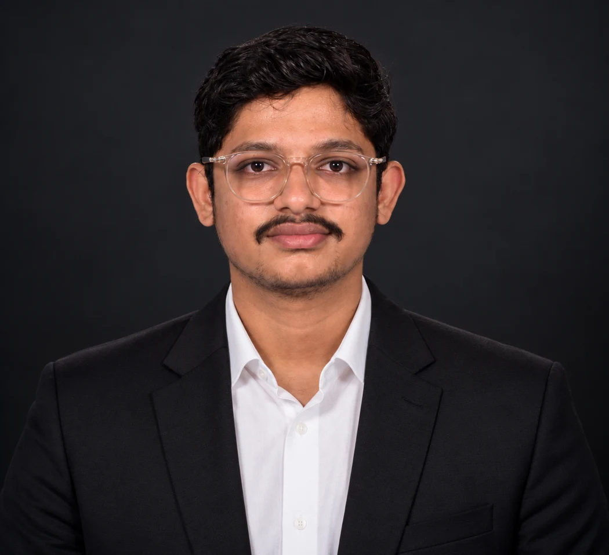

AVAILABLE FOR OPPORTUNITIES
COMPUTER SCIENCE / AI & ML
SUJAY
BK.
Building intelligent systems and reliable web applications. Exploring the intersection of software engineering and machine learning.

KLE TECHNOLOGICAL UNIVERSITY SCROLL TO EXPLORE ↓ EXPECTED 2027
01 / PORTFOLIO
SELECTED WORK.
Academic and personal projects across intelligent systems and web engineering.
02 / ABOUT
ALWAYS LEARNING.
I'm a Computer Science and Engineering student at KLE Technological University, Hubli. I enjoy building full-stack applications and exploring deep learning, with an interest in backend engineering, API development and reliable software systems.
Education
Certifications
03 / TOOLKIT
WHAT I USE.
04 / CONTACT
LET'S CONNECT.
Open to internships, job opportunities and collaborations.
sujaybk11@gmail.com ↗